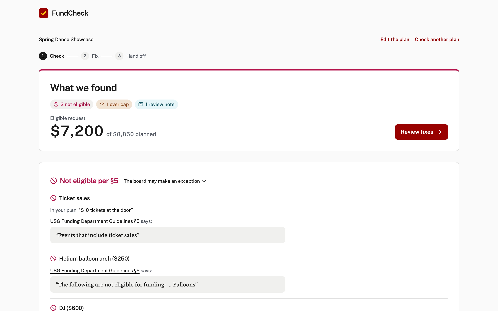

“Events that include ticket sales”
“On-campus events that are not open to all students”
So USG-funded on-campus events are free and open to every Trojan. An application that misses the deadline or comes back incomplete is one fewer free event.
$356,100
a year the USG Funding Department can allocate to undergraduate students and RSOs
Source: USG Funding Department page
The timing is this week. For an event between Jan 13 and Feb 23, 2027, two application Wednesdays are left: Nov 18 and Dec 2 (our estimate).
They clear about 2,000 words of Guidelines before applying:
“Funding Directors handle hundreds of applications every year”
An incomplete application costs their time too, and a missed one costs every Trojan a free event.
“If this deadline is not met the application will be automatically denied.”

The sample: a Bovard dance showcase with $10 tickets, a balloon arch and a DJ.
One web page. No login. Nothing stored.
Plain words, pasted by an officer. Treated as untrusted data.
Line items and event facts. Matches items to rule IDs from a fixed list, picks the fund, drafts the form answers. Backup: Llama 3.3 70B on Cloudflare Workers AI.
Drops any rule ID not on the list. Low-confidence matches become questions, not flags.
Every dollar, every date, the document checklist and the vendor check.
Every flag shows USG’s quote from a versioned rules table.
98 of 100
hand-written test plans checked correctly
Each test plan was labelled with the rules it must and must not trigger before the run. They are hand-written, not real applications, so the score is a check, not a benchmark. Every case is in the public repo.
FundCheck stores nothing: the plan goes to the model for one call, and the server logs token counts, never the text.
Our ask: let the USG Funding Department pilot FundCheck in spring 2027 office hours with the RSO liaisons.